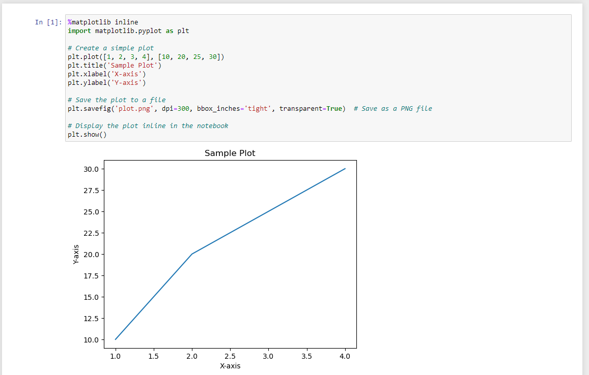

Plotting with Matplotlib
Matplotlib is a Python library used for creating a wide range of visualizations, such as line plots, scatter plots, and bar charts. It is highly customizable and commonly used with libraries like NumPy and pandas for data analysis and visualization. To find out more, visit the Matplotlib website.
Our HPC system can run it using headless mode, which consists of running it without an user interface and saving the plots directly to files (PNG, PDF, etc). Take a look at the example below:
import matplotlib
# Use the Agg backend for non-interactive environments
matplotlib.use('Agg')
import matplotlib.pyplot as plt
# Create a simple plot
plt.plot([1, 2, 3, 4], [10, 20, 25, 30])
plt.title('Sample Plot')
plt.xlabel('X-axis')
plt.ylabel('Y-axis')
# Save the plot to a file
plt.savefig('plot.png', dpi=300, bbox_inches='tight', transparent=True) # Save as a PNG file
# Note: plt.show() is not used here because the Agg backend is for non-interactive use
However, if you want to run interactively, by seeing the result directly on the screen, there are two options:
Run with the installed Matplotlib module
First, remember to log in to the cluster using the parameter “-X”. For example: ssh -X username@cluster.sigma2.no. You can also use the application “Putty” with the X11 Forwarding option enabled.
Also, make sure you have an X-Server application installed on your local operating system:
For Windows, you can use VcXsrv or Xming
For Mac, XQuartz is the commonly used application
Linux normally has already a X11 application included
Then, inside the cluster, load the module first:
module reset #make sure no modules are loaded
module avail | grep -i matplotlib #check which modules are available
module load matplotlib/3.8.2-gfbf-2023b #replace the last part with another version if you need
Finally, you can run your matplotlib script. Here’s an example:
import matplotlib
# Use the TkAgg backend for interactive environments
matplotlib.use('TkAgg')
import matplotlib.pyplot as plt
# Create a simple plot
plt.plot([1, 2, 3, 4], [10, 20, 25, 30])
plt.title('Sample Plot')
plt.xlabel('X-axis')
plt.ylabel('Y-axis')
# Save the plot to a file
plt.savefig('plot.png', dpi=300, bbox_inches='tight', transparent=True) # Save as a PNG file
# Display the plot on the screen
plt.show()
Using Jupyter Notebook
This option is the recommended one because you do not have to install any additional tools as everything is already installed on the server.
Go to https://apps.betzy.sigma2.no/ or https://apps.fram.sigma2.no/ or https://apps.saga.sigma2.no/
Log in with your username and password
Click on “Jupyter Notebook”
Select your account number and resources that you need and click “Launch”
Wait until it says “Running” in green and click “Connect to Jupyter”
On the new window, click on New > Python3 (ipykernel)
On the first cell, paste the following:
%matplotlib inline
import matplotlib.pyplot as plt
# Create a simple plot
plt.plot([1, 2, 3, 4], [10, 20, 25, 30])
plt.title('Sample Plot')
plt.xlabel('X-axis')
plt.ylabel('Y-axis')
# Save the plot to a file
plt.savefig('plot.png', dpi=300, bbox_inches='tight', transparent=True) # Save as a PNG file
# Display the plot inline in the notebook
plt.show()
Click on Run. Now the plot should appear on the screen and you can modify it according to your needs
